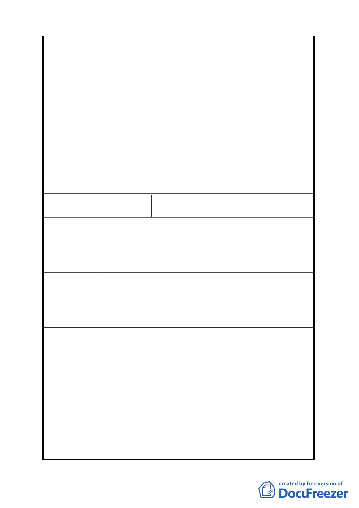

分工商服務展售區，其開發規模須達 2000 平方公尺；
部分辦公服務區（二）及部分工商服務展售區業已指
訂需全街廓開發，即可達到大規模開發及俾利相關產
業進駐之立意。
二、有關調整放寬允許第 51-54 組製造業進駐 1 節，係考
量臺北內湖科技園區發展已達飽和，為延伸及擴大科
技產業群聚效應，提供新興發展腹地，遂比照內湖科
技園區允許使用之範疇，放寬相關科技發展相關產業
進駐。另計畫區內（大彎南段地區及羊稠小段地區）
皆依據個別區位之不同，訂有都市設計管制要點，規
範建築物造型、色彩、高度、公共開放空間系統、人
行動線系統等，將可透過都市設計審議機制，維護整
體環境品質。
委員會決議 依市府（發展局）回應內容辦理。
編
號
10
陳情人
新豐窯業建設股份有限公司（代表：張世
昌）
一、 為促進臺北市科技產業的持續發展，提升臺北市產業
的競爭力，本區應以高科技辦公園區及住宅區為主。
陳 情 理 由 二、 本次計劃之修訂已取消部分限制，故無論是辦公服務
區（一）（二）、工商混合區或工商服務展售區的使用
項目已十分雷同。
一、 建議請勿放寬公害較輕微之工業、公害輕微之工業及
公害較重之工業進駐本區，以提升本區的環境品質。
建 議 辦 法 二、 建議請將辦公服務區（一）（二）、工商混合區、工商
服務展售區等四種分區之容許項目皆能統一放寬，以
促進本區的均衡發展
有關建議勿調整放寬允許公害較輕微之工業、公害輕
微之工業及公害較重之工業進駐，及將辦公服務區（一）
（二）、工商混合區、工商服務展售區等四種分區容許使用
項目統一放寬等節，經查上開各使用分區之使用性質本不
相同，故其容許使用項目即不相同。另為考量臺北內湖科
技園區發展已達飽和，為延伸及擴大科技產業群聚效應，
發展局回應 提供新興發展腹地，遂比照內湖科技園區允許使用之範
疇，放寬相關科技發展相關產業進駐（包括公害較輕微之
工業、公害輕微之工業及公害較重之工業等）。另計畫區內
訂有都市設計管制要點，規範建築物造型、色彩、高度、
公共開放空間系統、人行動線系統等，未來亦可透過都市
設計審議機制，維護整體環境品質。
13